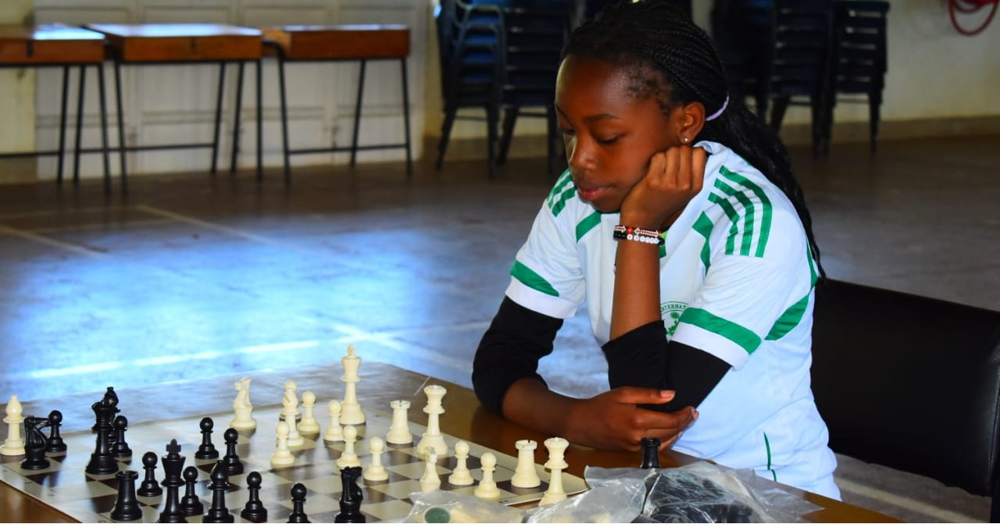
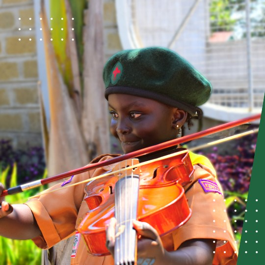

Mustard Seed International Schools is designed to be a continuous, nurturing, and rigorous educational journey. From the very first day in Early Years until graduation day in Senior School, our students benefit from a cohesive and internationally recognized framework that prepares them for global success.
The Early Foundations
It all begins in our vibrant Early Years department, where we emphasize hands-on, highly engaging play-based learning. Whether it's imaginative play, early STEM activities, or getting involved in our Early Years cooking classes, children build crucial fine motor skills, social intelligence, and a fundamental love for discovery.

The Global Cambridge Curriculum
As students progress into Junior and Senior School, they transition into the esteemed Cambridge curriculum. We offer continuous progression through Cambridge Primary, into the Cambridge IGCSE, and culminating in Cambridge International A-Levels. This rigorous academic framework ensures our learners acquire deep subject knowledge and the conceptual understanding necessary for higher education.


Our results speak for themselves, with an outstanding university progression rate. But the academics only tell half the story. Our dedicated teaching staff employ modern pedagogical strategies, combining traditional academic rigor with collaborative, project-based learning.
Holistic Extracurriculars
We firmly believe that some of the most important lessons happen outside the traditional classroom. To support cognitive flexibility, discipline, and artistic expression, we maintain a vibrant extracurricular roster. Students can test their strategic thinking on the Chess board or develop their musical talents playing the Violin and other instruments in the school orchestra.


At Mustard Seed, we don't just educate; we build dynamic, well-rounded individuals ready to take their place in an ever-changing world.